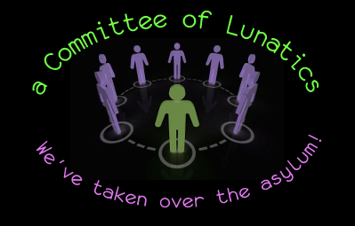

Introduction
Having searched for many years for a usable Linux window manager that both appealed to my sense of aesthetics and had at least some of the features I feel necessary for a 'proper' WM; in all that time I only came across one which, at least partially, fit the bill.
mavosxwm was the creation of Martin Vollrathson and hadn't been updated since sometime in 2003. The mavosxwm website, except for the outdated news page has long since stopped functioning; but below is the only image of the about page that I have managed to find. All information in the image, and in fact the image itself, can be considered his intellectual property and is used here only for informational purposes.
I, like Martin, am quite insane; but I digress...
After obtaining permission from him in 2007, I forked Mavosxwm v0.2.1 to use as the base from which I will write kowm. I will be recycling and rearranging some of its parts and pieces; these bits are, even now, making their way into various locations in kowm-core.
For the record, kowm itself stands for Kobol's Own Window Manager; in like manner all related icons, artwork, and documentation should reflect this.
The modules themselves are to be named for the twelve colonies of man and various non-aligned colonies from the original Battlestar Galactica, circa 1978-1979.
kowm
kowm ( /kōm/ ) never wanted to be anything more when she grew up than the only X window manager that even I would take home to Mom. kowm has decided that 'extensible simplicity' is the wave of the future; and we tend to agree.
kowm is licensed under the 3-clause BSD license whose text can be found here.
kowm, upon it's release, will include the following...
kowm-core
kowm-core ( /kōm-kôr/ ) is made up of six modular desktop libraries; five handle the basic features that make for a beautifully simple window manager and the sixth is a framework for building, attaching, and manipulating new modular extensions. Since speed is of the essence here, we're planning on writing kowm-core in C++.
- caprica provides low-level constructs shared by all 'windows'; including the root window.
- gemoni provide basic workspace management and functionality.
- leonis provides the graphics subsystem from which all graphics toolkit modules can hook into and manipulate objects.
- sagitara provides a basic module structure, attachment points and shared asset management funtions.
- piscera provides automatic menu generation of the system menu, the desktop menu and the application menus.
- virgon provides all remaining mid- and high-level 'window' management
kowm-opts
kowm-opts ( /kōm-äpts/ ) currently has six additional modular libraries planned. These libraries - along with any others we think are needed - will provide additional services that, while not absolutely necessary, would probably be appreciated by the end user. These libraries will most likely be written in Ruby; however additional bindings for Python and Lua are currently on the RoadMap.
kowm-apps
kowm-apps ( /kōm-æps/ ) are, collectively, any apps written using the kowm libraries; these are usually intended to be optionally included with any working kowm-desktop if a user so desires. These will reside within the kowm-apps project. kowm-apps can use any language for which exists a language binding or a new one if you or a friend have the knowledge to write one; don't fret too much, it's not a difficult task. That being said, we definitely are expecting the first few to be all Ruby.